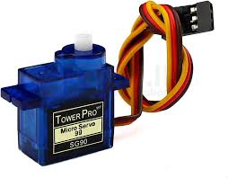
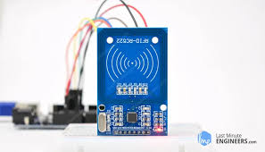
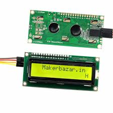
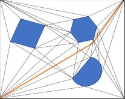
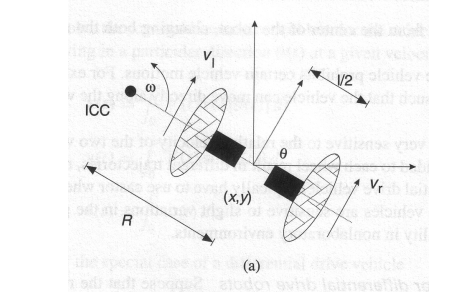
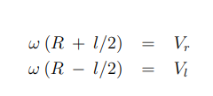
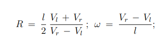
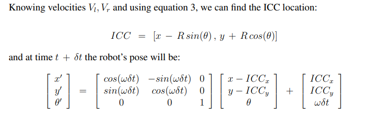
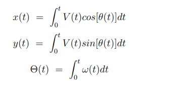

Industrial Patrolling Mobile Robot
An autonomous mobile robot capable of navigating indoor environments with obstacle detection and RFID-based personnel identification
B. Yogeswar Reddy
CB.SC.U4AIE24011
P. Maniroop
CB.SC.U4AIE24038
M. Jay Krishna
CB.SC.U4AIE24030
M. Phanendra
CB.SC.U4AIE24032
Abstract
This project presents the design and implementation of a low-cost autonomous mobile robot capable of navigating an indoor environment. The robot uses an Arduino Uno microcontroller with a differential drive mechanism controlled by an L298N motor driver. An ultrasonic sensor mounted on a servo motor allows the robot to scan its surroundings and detect obstacles.
The robot follows a reactive navigation strategy where it continuously moves forward when the path is clear and scans left and right when an obstacle is detected. Based on the detected distances, the robot selects the direction with more free space and continues navigation.
RFID technology is integrated into the system to identify authorized personnel, and an LCD display shows authentication status. This demonstrates how low-cost hardware components can be combined to create a simple autonomous robotic system capable of performing basic navigation and identification tasks.
Introduction
Autonomous robots capable of navigating their surroundings are widely used in applications such as industrial inspection, warehouse automation, and environmental monitoring. These robots must be able to detect obstacles and adjust their path accordingly.
In this project, a mobile robot is designed using an Arduino Uno, ultrasonic sensing, and a differential drive system controlled by an L298N motor driver. The ultrasonic sensor scans the surroundings to determine safe navigation paths.
The robot follows a simple reactive navigation strategy where it moves forward when the path is clear and scans left and right when obstacles are detected. RFID technology is also integrated to authenticate authorized individuals.
Hardware Components

Arduino Uno
Main controller.

L298N Motor Driver
Controls DC motors.

DC Motors
Provide movement.

Ultrasonic Sensor
Detects obstacles.

Servo Motor
Rotates sensor.

RFID
Identifies employees.

LCD
Displays authentication status.
Battery Pack
Power supply.
Navigation Strategy

The robot employs a reactive Obstacle-avoidance navigation strategy to explore an unknown environment.
The robot continuously moves forward while monitoring the distance to obstacles using the ultrasonic sensor. When an obstacle is detected, the robot stops and rotates the servo motor to scan the left and right directions. The robot then compares the distances and moves in the direction with the largest free space.
Kinematics
Differential Drive Kinematic Model
The robot follows a differential drive model where motion is produced by two independently driven wheels.
The robot rotates around the Instantaneous Center of Curvature (ICC) when the two wheels move at different speeds.

Equations of Motion


There are three important motion cases in a differential drive robot:
- If Vl = Vr, the robot moves in a straight line. The turning radius R becomes infinite and the angular velocity ω = 0, meaning there is no rotation.
- If Vl = −Vr, the turning radius becomes R = 0. In this case, the robot rotates about the midpoint of the wheel axis and performs a rotation in place.
- If Vl = 0, the robot rotates about the left wheel. The turning radius becomes R = l / 2. The same condition applies if Vr = 0, where the robot rotates about the right wheel.
Forward Kinematics

Inverse Kinematics


Simulation
Robot reached: ZONE_B
Robot reached: ZONE_C
Robot reached: ZONE_A
Conclusion
- The project demonstrates an autonomous robot capable of navigating indoor environments.
- Ultrasonic sensing enables obstacle detection and avoidance.
- A reactive navigation algorithm allows the robot to adapt to unknown environments.
- RFID provides authentication for authorized users.
- The system shows how low-cost hardware can build a simple autonomous robotic system.